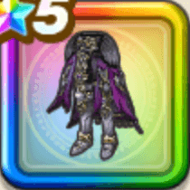

黒王のメタルキング兜
攻略班 10点 / けもの系への耐性+5%すべての状態異常耐性+3%物質系への耐性+5%けもの系への耐性+5%悪魔系への耐性+5%スキルの斬撃・体技ダメージ+7%【晴れ】全属性ダメージ+3%ドルマ属性斬撃・体技ダメージ+7%ヒャド属性斬撃・体技ダメージ+7%
くわしい特徴
【レベル別習得スキル】 Lv1けもの系への耐性+5% Lv3すべての状態異常耐性+3% Lv5物質系への耐性+5% Lv8スキルの斬撃・体技ダメージ+7% Lv10【晴れ】全属性ダメージ+3% Lv12ドルマ属性斬撃・体技ダメージ+7% Lv15ヒャド属性斬撃・体技ダメージ+7% Lv18けもの系への耐性+5% Lv20すばやさ+6 Lv23悪魔系への耐性+5% Lv25戦闘終了時にMPを3回復する 【限界突破スキル】 1凸攻撃力+12 2凸すばやさ+12 3凸守備力+12 4凸さいだいHP+12